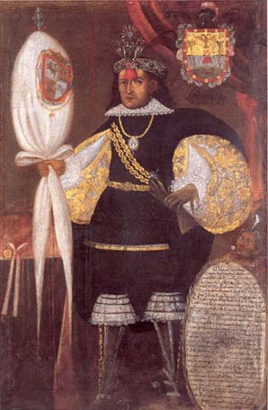
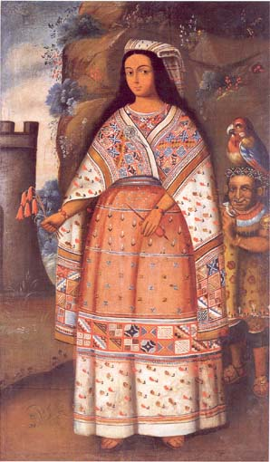

Representaciones del siglo XVIII de la élite indígena de raíz incaica
 Retrato de don Marcos Chiquathopa. Anónimo. Cuzco, siglo XVIII. Óleo sobre lienzo, 199 x 130 cm. Museo Inka, UNSAAC, Cuzco. |
 Retrato de coya con paisaje. Anónimo. Cuzco, principios del siglo VIII. Óleo sobre lienzo, 205 x 124 cm. Museo Inka, UNSAAC, Cuzco. |